| Sample of Swing Metrics (2024) | |||||
|---|---|---|---|---|---|
| Batter | Bat Speed | Swing Length | Swing Path Tilt | Attack Angle | Attack Direction |
| Altuve, Jose | 70.3 | 8.3 | 29.9 | 17.3 | −5.3 |
| Judge, Aaron | 73.5 | 8.2 | 40.0 | 16.4 | −2.2 |
| Ohtani, Shohei | 72.6 | 7.2 | 31.1 | −1.9 | 1.9 |
Clustering Swing Behavior Within MLB Hitters
Introduction
In baseball, a pitcher controls the game more than the hitter. The pitcher can take his time to select the pitch type and location carefully. Once the ball leaves the pitcher’s hand, it is the batter’s job to discern the information in milliseconds. He has to decide if he wants to swing and where to swing, all in the time it takes for a person to blink. This is part of the reason hitting is so difficult, and why even the best players fail seven out of ten times.
Mirroring the game itself, baseball analytics have also favored the pitcher. Pitchers have gained access to their ball tracking data, which provides them with more information to tinker with and make them even more effective. Previously, batting metrics were also reactive; launch angle and exit velocity were two factors that hitters tried to optimize, but they were still heavily dependent on the pitch and their swing, for which they had no actual data. Recently, analytics have caught up to the offensive side of the game. Batters and analysts alike now have access to bat-tracking data. Five key metrics are bat speed, swing length, swing path tilt, attack angle, and attack direction. Now, hitters have access to data that they can use and study to optimize their mechanics and improve their effectiveness at the plate.
A lot of exploratory research has been conducted to identify swing archetypes among all Major League hitters. This research aims to apply a single approach to a group of hitters. We are attempting to go deeper and discover trends at the individual hitter level. For example, many hitters claim to have a “two-strike approach,” where they protect the plate and shorten up to put the ball in play, perhaps sacrificing power to reduce the risk of a strikeout. Or maybe hitters adopt a more “uppercut” swing when there is a runner on third and fewer than two outs, trying to hit a sacrifice fly.
The catalyst for this project is based on these assumptions. In the past, we could only watch the TV and guess what these hitters were doing. Now we can quantify it and examine their approaches under the hood. We aimed to investigate our assumptions about hitters’ approaches by clustering their swings into distinct groups and identifying when hitters used different swing types.
Data
All data used in this analysis is from the 2024 MLB season. This is because, given the newness of the data, it is the only full season of bat-tracking data we have. Each observation is a swing from the 2024 season, complete with pitch characteristics, bat-tracking, and the result of the play. We are using data from Baseball Savant, scraped using the sabRmetrics package. Here are some example rows:
Data Cleaning
For our analysis, we only wanted to consider full swings where the batter fully intended to make contact with the ball. We didn’t want to include check swings because the hitter is intentionally trying to stop himself from swinging and take the pitch. We also omitted bunts, as those are not true swings.
To aid in our analysis, we added two features to the data: squared up and blast. These are both indicators with values “TRUE” or “FALSE.” We created them using the definitions on Baseball Savant. A swing has “squared up” a ball when the exit velocity is at least 80% of its theoretical maximum. That percentage is also referred to as the squared-up rate. A blast is a swing where the squared-up percentage plus the bat speed equals at least 164. Adding these features enables us to evaluate the quality of a player’s swing, disregarding the outcome in the field.
Methods
Because our goal was to identify distinct swing types for each hitter, we needed a method to evaluate the similarity between swings and to determine natural groupings within that space. To accomplish this, we applied Gaussian mixture modeling (GMM) to cluster each player’s swings based on their swing-tracking characteristics. We fit each hitter’s swing to a GMM by using R’s mclust package. The model was fit using an Expectation-Maximization algorithm. Each swing was defined by the following features: bat speed, swing length, swing path tilt, attack angle, and attack direction. We chose to include these features, as they are each core components of a player’s swing.
We selected GMM over hard clustering approaches like k-means for two key reasons:
Flexibility: GMM assumes the data arises from a mixture of Gaussian distributions, allowing it to model soft cluster boundaries and capture overlapping clusters. This is particularly important given that hitters may exhibit multiple swing “types” depending on context (e.g., adopting a more protective approach in two-strike counts).
Adaptive model complexity: Rather than manually specifying the number of clusters for each player, we used the Bayesian Information Criterion (BIC) to select the optimal number of components automatically. This approach scales well across the league and avoids imposing a rigid or uniform structure across all hitters.
These advantages were critical for a project of this scope, where we clustered swings individually for every hitter in MLB. Using a fixed number of clusters would have ignored inter-player variability, while manual tuning would be labor-intensive and introduce potential subjectivity or bias.
Although we briefly considered applying Principal Component Analysis (PCA) to reduce dimensionality before clustering, we found that doing so did not substantially alter the clusters or resulting visualization. Ultimately, we retained the raw swing features to preserve the interpretability of the resulting clusters.
Results
After applying GMM clustering to each MLB hitter’s swing data, we used mosaic plots to compare how the distribution of swings changed in certain situations. One situation we examined was how a player’s swing changed when they had two strikes against them. When a hitter is one pitch away from striking out, they may change their swing in an attempt to put the ball in play and make something happen. Hitters may claim to “shorten up” or choke up on the bat, but now we can look behind the curtain and see what is going on.
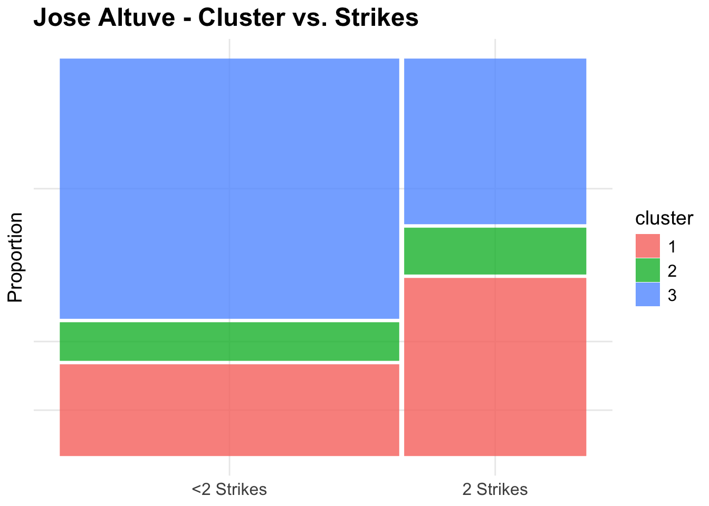
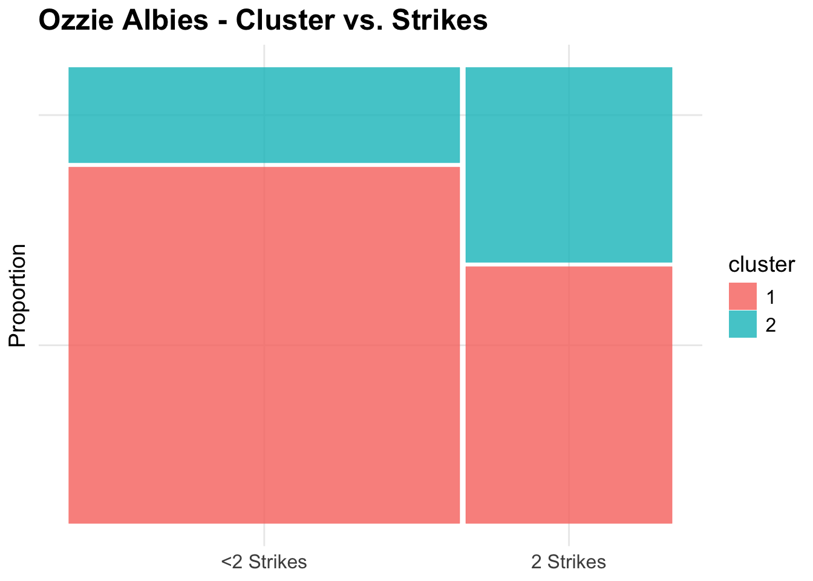
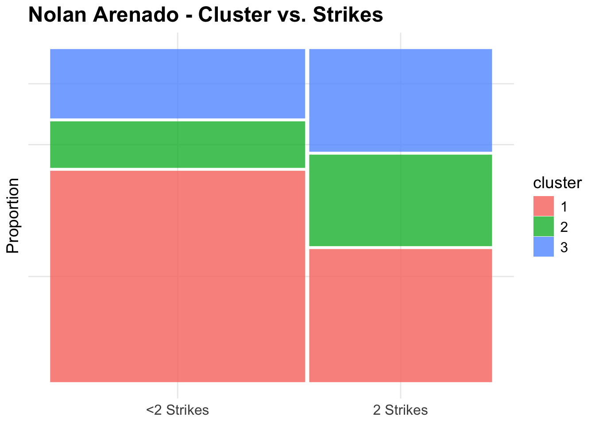
Looking at a few of these plots, a notable trend emerged: hitters tend to use “worse” swings in two-strike counts compared to other situations. Below you can see how contact and quality of contact vary by cluster.
| Altuve Contact Quality by Cluster | ||||
|---|---|---|---|---|
| Cluster | Number of Swings | Contact % | Squared Up % | Blast % |
| 1 | 337 | 69.73% | 22.85% | 2.67% |
| 2 | 114 | 74.56% | 14.04% | 2.63% |
| 3 | 629 | 85.21% | 30.52% | 9.86% |
| Albies Contact Quality by Cluster | ||||
|---|---|---|---|---|
| Cluster | Number of Swings | Contact % | Squared Up % | Blast % |
| 1 | 588 | 83.50% | 27.38% | 7.14% |
| 2 | 237 | 78.48% | 24.89% | 3.38% |
| Arenado Contact Quality by Cluster | ||||
|---|---|---|---|---|
| Cluster | Number of Swings | Contact % | Squared Up % | Blast % |
| 1 | 576 | 91.84% | 32.29% | 11.63% |
| 2 | 210 | 67.62% | 17.14% | 0.48% |
| 3 | 268 | 87.31% | 23.13% | 3.73% |
These findings challenge the common belief that players adopt a more disciplined, contact-oriented approach with two strikes. Importantly, by “worse” swing, we do not imply that hitters are consciously choosing less effective swings. Instead, contextual factors (pitch type, location, etc) appear to induce swings from the lower-performing regions of a player’s swing distribution. Our clustering doesn’t suggest that players have five entirely distinct swing mechanics. Instead, we’ve captured different areas within each player’s overall swing distribution. This allows us to examine when different swing types emerge and begin to explore why these shifts occur. A few such possibilities are the pitch location and pitch type. Here are how the swings are distributed when looking at those characteristics.
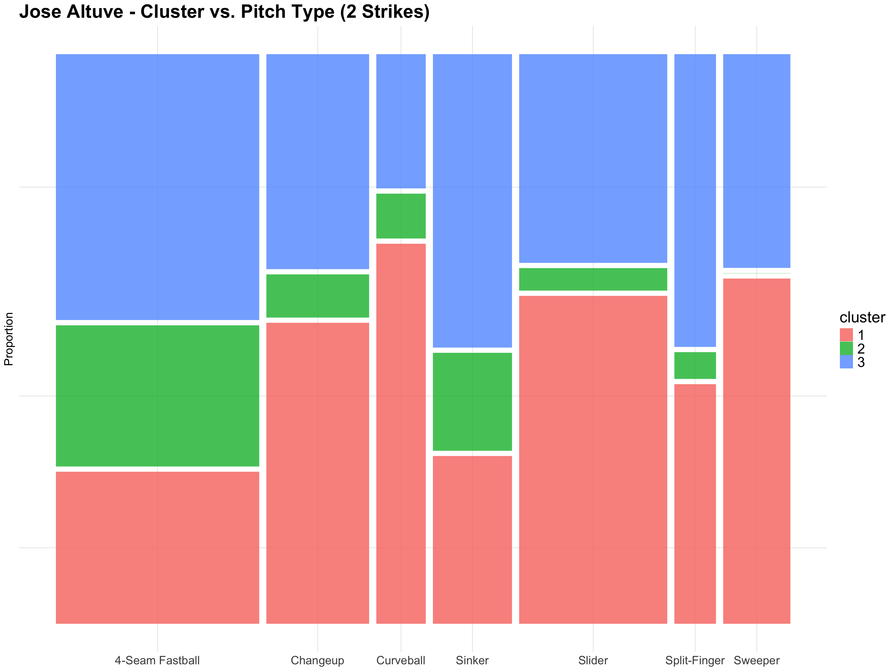
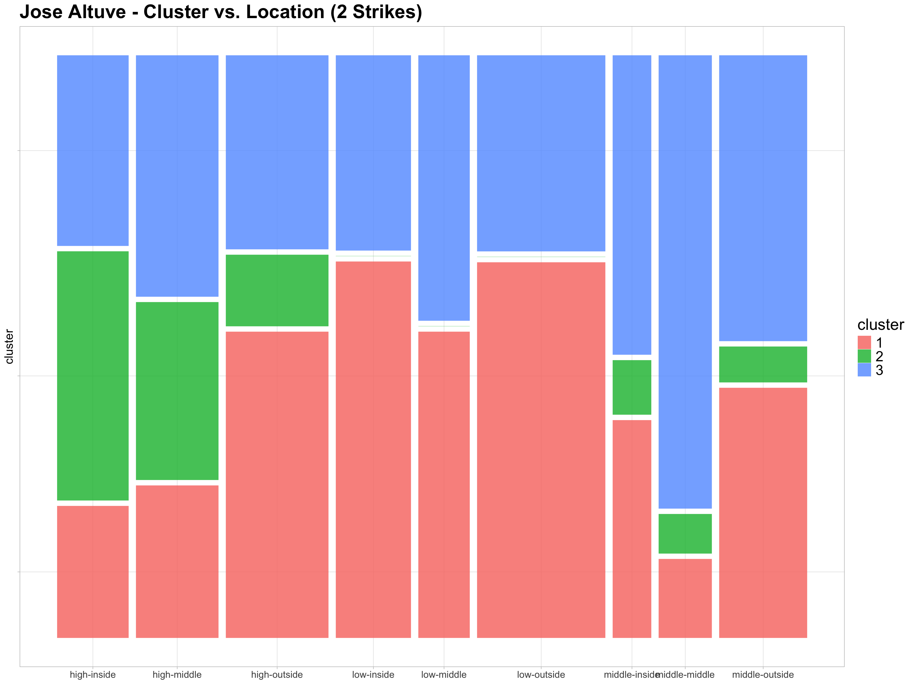
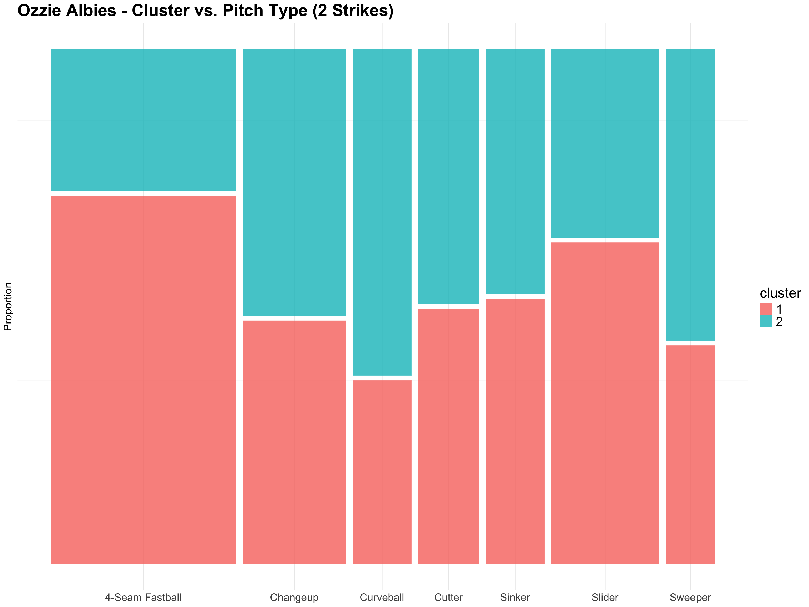
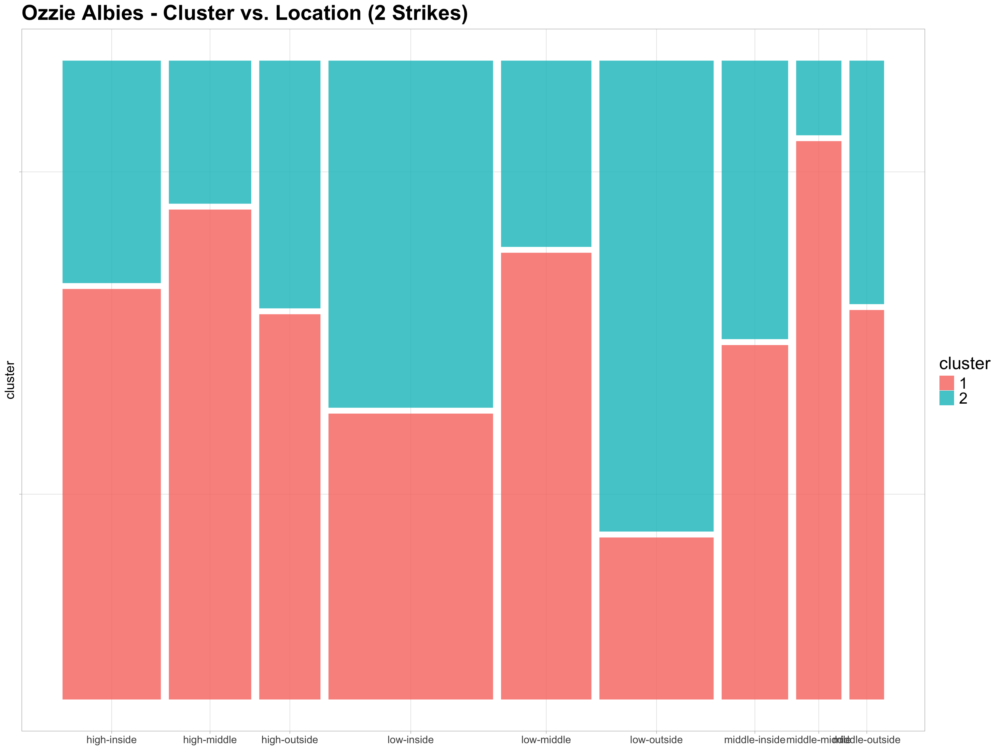
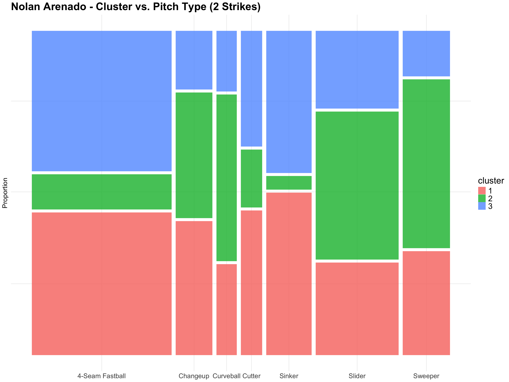
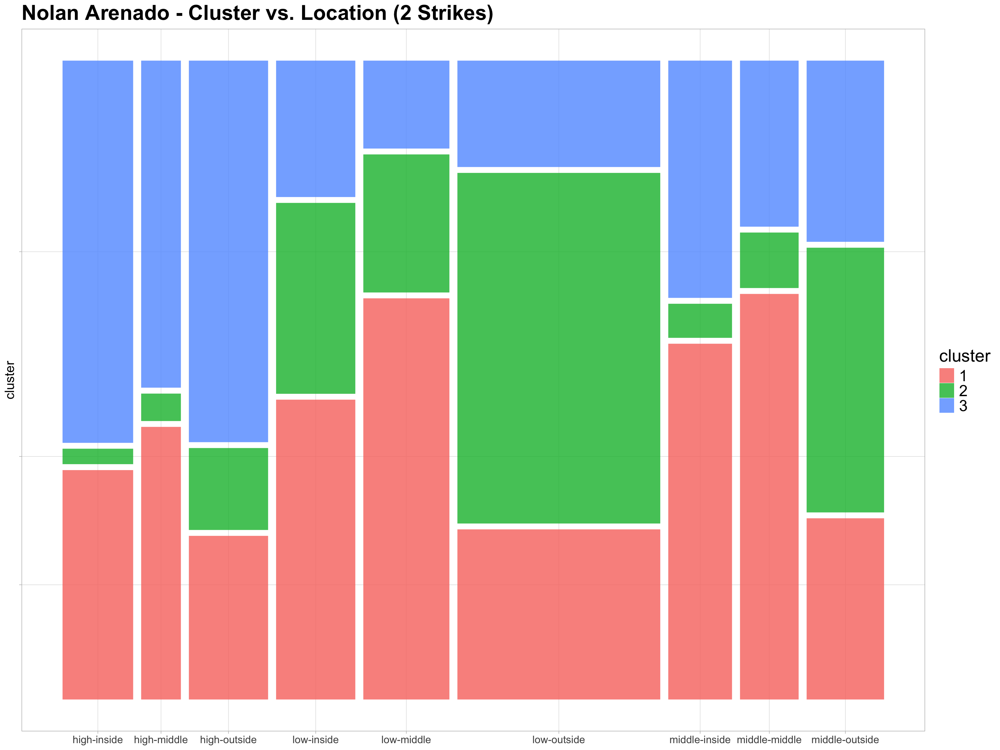
Chi-Square Testing
Since we examined individual players, we need a method to generalize our findings across all batters. One way to do this is through a chi-square test for independence. Our null hypothesis was that the swing cluster is independent of whether a batter has two strikes or not. We ran the test on hitters with at least 420 swings (the median in our data set) to ensure there were enough points for reliable clustering and generalizations. After conducting the test on 307 hitters, 96 of them had statistically significant dependence between strikes and swing clusters after accounting for multiple testing, or about 31%.
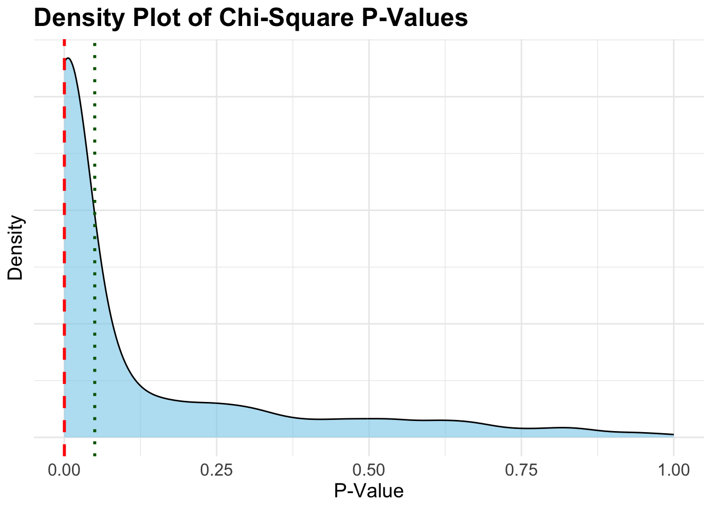
While it is interesting to look at the hitters who do display significant discrepancies in their swing distribution in different strike situations, it is also good to look at hitters who don’t. One such hitter is Luis Arraez, known for his high contact percentage and low strikeout rate. For a hitter with a profile like Arraez, it makes sense that his swing distribution doesn’t significantly vary when he has two strikes. Arraez continues to draw from the better part of his swing distribution in disadvantageous counts, which allows him to not only avoid strikeouts but also provide quality contact that supports his high average.
Our process of clustering and then testing discovered trends provides value in not only better understanding what is going on with hitters, but also in helping us understand a hitter’s performance. While we don’t have complete 2025 data, with over half the season played as of July 23, 2025, we can compare players’ swings and their performance across seasons. One key example is Kyle Stowers, a first-time all-star in 2025 for the Miami Marlins. In 2024, splitting time between the Baltimore Orioles and Miami Marlins, Stowers’ batting average was .208, and his bWAR was -0.5. Here is his cluster versus strike plot for 2024.
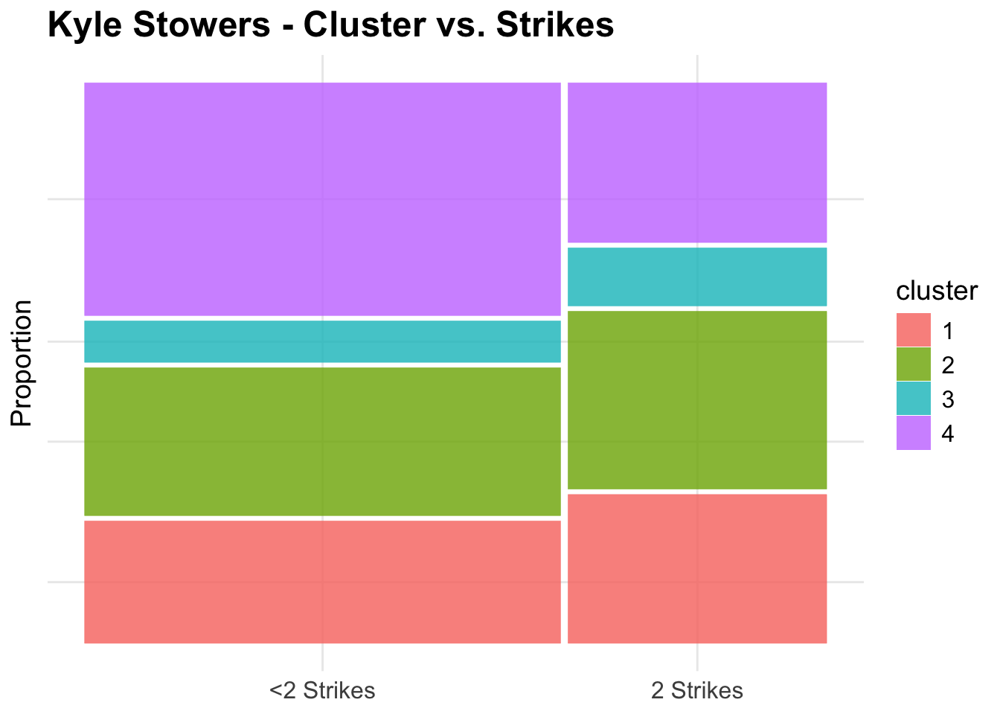
| Stowers 2024 Contact Quality by Cluster | ||||
|---|---|---|---|---|
| Cluster | Number of Swings | Contact % | Squared Up % | Blast % |
| 1 | 103 | 64.08% | 18.45% | 11.65% |
| 2 | 124 | 62.10% | 8.87% | 4.84% |
| 3 | 37 | 45.95% | 8.11% | 2.70% |
| 4 | 162 | 79.01% | 23.46% | 16.67% |
After a full offseason with the Marlins, Stowers is currently hitting .295 and has already accumulated 3.0 bWAR. This is his plot for 2025.
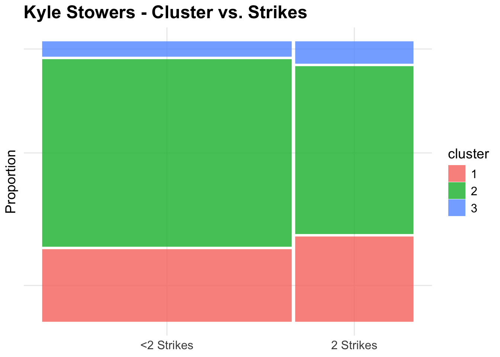
| Stowers 2025 Contact Quality by Cluster | ||||
|---|---|---|---|---|
| Cluster | Number of Swings | Contact % | Squared Up % | Blast % |
| 1 | 193 | 54.92% | 8.29% | 4.66% |
| 2 | 457 | 77.46% | 23.63% | 15.32% |
| 3 | 44 | 34.09% | 6.82% | 0.00% |
Stowers has clearly exhibited an ability to consistently use his “A” swing much more frequently than in 2024 in two-strike counts. His improvement in two-strike counts has certainly aided his rise this year.
Discussion
These bat-tracking metrics have opened up numerous new avenues for research, both at the league level and the individual player level. Our analysis reveals that hitters’ swings are better understood as a distribution rather than as discrete, consciously chosen swing types. We have begun to show that through our work on hitters’ swings in two-strike and non-two-strike situations.
Limitations
While we are very satisfied with our work and analysis, there were a few limitations.
Time Period of Analysis: We only had a full year of data: the 2024 season. If we had multiple seasons of data, we would be able to go more in-depth to see how players’ swing distributions change year over year, like we did with Stowers.
Violation of GMM Assumptions: While a GMM assumes underlying Gaussian (normal) distributions, a hitter’s swing distribution may be skewed with a long tail of poor swings.
Consistency Bias: We are assuming that all swings from an entire season are from the same swing distribution. This overlooks the potential adjustments hitters may make throughout the season, which could disrupt our clustering.
Future Work
From here, there are many possible paths to take our research. One thing we’d like to do is develop a mixed-effect model to predict contact on any swing given the pitch and swing characteristics. This would add another level to the never-ending battle between batter and pitcher as each strives to gain an edge over the other.
Another extension of our study would be to incorporate our findings into sequencing models to examine how a hitter’s swing is affected by the previous pitches in the at bat. We’ve already shown how many hitters draw on the weaker part of their swing distribution when they have two strikes. Maybe specific sequences can emphasize those weaknesses.
Acknowledgements
Special thanks to our advisor, Bryant Davis, as well as Quang Nguyen, Dr. Yurko, and our program TA’s for their guidance and support.
References
Lambert, J. (2024, August 1). Using MLB bat tracking data to better understand swings. Driveline Baseball. Retrieved from https://www.drivelinebaseball.com/2024/07/using-mlb-bat-tracking-data-to-better-understand-swings
Powers, S. (2025). sabRmetrics: Query {statsapi, baseballsavant.mlb.com} and fit fundamental sabermetric models. Retrieved from https://github.com/saberpowers/sabRmetrics/tree/v1.0.4
Kyle Stowers Stats, Height, Weight, Position, Rookie Status & More. Baseball Reference. Retrieved July 24, 2025, from https://www.baseball-reference.com/players/s/stoweky01.shtml